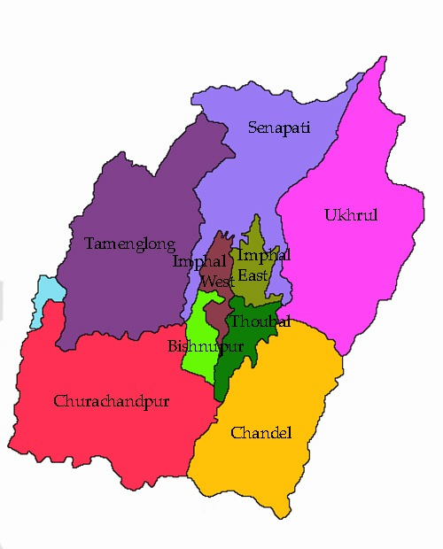

| Name: | Manipur |
|---|---|
| Capital: | Imphal |
| Language: | Meitei, English |
| Chief Minister: | N. Biren Singh |
| Total Districts: | 16 |
| Population: | ~2.8 million (as per 2011 census) |
| Formation: | 21 January 1972 |
| Area: | 22,327 km² (23rd largest in India) |
| Borders: | Nagaland, Assam, Mizoram, Myanmar |
| Coastline: | None (Landlocked State) |
Know more